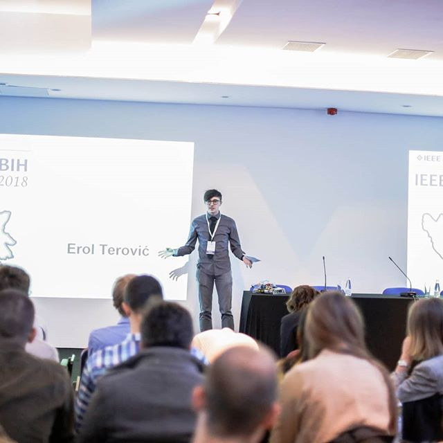

Erol Terović
BoE - Electrical Engineer
04/09/1998
CONTACT
Hamdije Kresevljakovica 29
Sarajevo 71000
Bosnia and Herzegovina
eroldude.github.io/personal_cv_website
erolprivate@gmail.com
(+387) 603322723
Work Experience
Firmware Engineer
Klika d.o.o.
February 2022 - Current, Sarajevo
Researcher
Center for Advanced Technologies
2020 - January 2022, Sarajevo
PCB Design and Manufacture
Proven d.o.o.
2017, Sarajevo
English and I.T. Tutor
Klika d.o.o.
2016 - Current, Sarajevo
Education and Training
Student exchange
Alpen Adria Universität Klagenfurt
2020, Klagenfurt am Wörthersee, Austria
Bachelor of Electrical Enginneering
Faculty of Electrical Engineering
Department of Automation and Electronics
2021, Sarajevo
High School
First Bosniak High School
Natural Sciences
2011 - 2016, Sarajevo
Primary School
International School of Sarajevo and O.S. Hasan Kikic
2004 - 2012
Conferences and Seminars
Speaker at IEEE BiH SYPC Congress
Speech topic "From the Robot League All the Way to IEEE
2018, SSST
Energy Storage Systems Seminar
Faculty of Electrical Engineering Sarajevo
Department of Automation and Electronics
2021 - , Sarajevo
Loudoun International Youth Leadership Summit 2016
Loudoun County, Virginia USA
2016
STEM Summer Camp Bielefeld (AFS)
Bielefeld, Germany
August 2015
Sarajevo Innovations Festival Participant
Project: The application of simple techniques in the desigh of a battle robot
2020
Language proficiency
Bosnian
English
Japanese
German